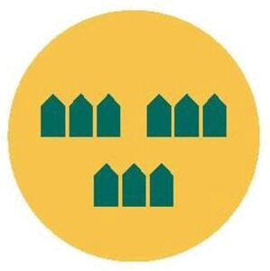

Trade Mark Journal No.2026/011 13 March 2026
WO0000001904155 (9,16,35,36,37,38,41,42,45)
Office of origin: Sweden
Date of International Registration:11 November 2025
Date of designation in the UK:
11 November 2025

The yellow and green.
A circle with green houses against a yellow background.
International priority date claimed: 12 May 2025
(Sweden)
- Class 9
- Training manuals and handbooks in the form of computer programs.
- Class 16
- Educational publications; handbooks [manuals]; manuals; printed matter; printed matter for instructional purposes; manuals for instructional purposes; instructional and teaching materials; posters; advertising posters; printed advertisements; printing blocks; stickers [stationery].
- Class 35
- Retail services in relation to books, periodicals, paper stationary, teaching materials [except apparatus], paper and cardboard products, photographs [printed], postcards, greeting cards, posters, maps, plastic folders and plastic materials for packaging; advertising services; advertising; marketing; on-line advertising on a computer network; arranging and conducting of fairs and exhibitions via global networks for commercial purposes; planning and conducting of trade fairs, exhibitions and presentations for economic or advertising purposes; promotion of fairs for trade purposes; consultancy services regarding business strategies; processing, retrieval and/or control of computerized information; data searches (for others) in databases; computerized database management; computerized file management; input, processing, checking and/or retrieval of data in databases; commercial information services; providing consumer information relating to goods and services; commercial lobbying services; production and distribution of radio and television commercials; production of video recordings for advertising purposes; publication of publicity materials; publication of publicity texts; reproduction of documents, information (paper) and advertising material; advisory services for business management; compilation of statistics; compilation, entry and systematization of information in databases; updating and dissemination of advertising matter; updating advertising information on databases; updating business information on databases; publicity columns preparation; retail services in relation to instructional and teaching materials in the field of environmental certification of buildings; compilation of environmental information.
- Class 36
- Real estate consultancy.
- Class 37
- Consulting, information and advisory services related to construction and building; consultancy relating to residential and building construction; consultancy services relating to the repair and renovation of buildings; consultancy and information services relating to construction; construction consultancy services; construction services; information regarding repair and repair services; building inspection [in the course of building construction]; preparation and implementation of building renovation projects; supervision of building construction, construction work and building repair; supervision, inspection and management of building and construction projects; advisory services regarding the installation of environmental control systems; advisory and consultancy services in the field of construction.
- Class 38
- Provision of digital forums for sharing information on energy use and environment in buildings.
- Class 41
- Arranging and conducting of visits, workshops, seminars, social gatherings, lectures and similar meetings for knowledge sharing and knowledge development in matters relating to sustainable community development; education information; teaching; arranging and conducting seminars and conferences; arranging and conducting physical courses and online training; production of course material; production of radio and television programmes; publication of teaching materials; on-line publication of electronic books and journals; dissemination of educational material on issues related to sustainable community development; services for the implementation of training procedures; providing on-line electronic publications, not downloadable; publication of books, newsletters and newspapers; translation and interpretation; vocational guidance [education or training advice].
- Class 42
- Certification [quality control]; issuance of quality guarantee certification; advisory and consultancy services related to quality certifications for sustainable community building; advisory and consultancy services in the field of sustainability research issues, energy-saving, environmental conservation and environmental protection; town planning advisory services; research and development services in the field of sustainable community building; surveying and inspection [testing] services; structural engineering services; building inspection services [surveying]; analysing of air in building environments; monitoring of activities which influence the environment within buildings; consultancy in the field of computers; design and development of computer hardware and software; design of computer hardware; design of home pages (computer programming); design and development of computer software/websites; design services relating to the reproduction of documents; research and development services; research in the field of environmental protection; information services relating to computer system applications; engineering services; inspection of plant and machinery; quality control; land surveying; measurement services; material testing; engineering project management regarding environmental projects; product development; advisory services relating to product safety; urban planning; technical inspection services; technical investigations; conducting technical project studies; technological services; conducting technical project studies for construction projects; development of testing methods; preparation of technical manuals; design of printed material; architectural and urban planning services; consultancy services relating to architecture and urban planning; environmental hazard assessment; environmental surveys; storage of computerized information; storage of data in databases; advisory services relating to environmental certification of buildings; consulting, information and advisory services related to design.
- Class 45
- Political lobbying services.
Building Green in Sweden AB
Representative: Advokatfirman Lindahl KB, Pråmplatsen 4, SE-211 19 Malmö, SWEDEN